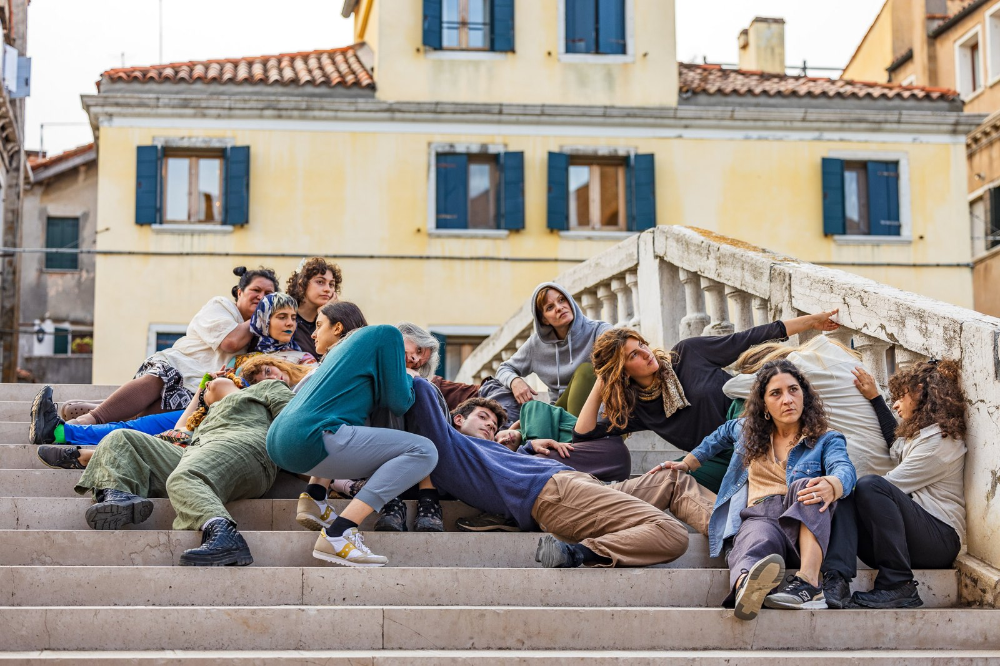
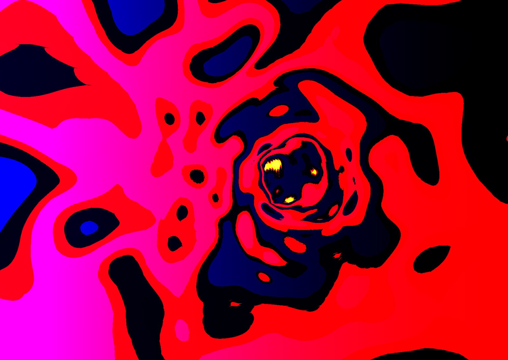
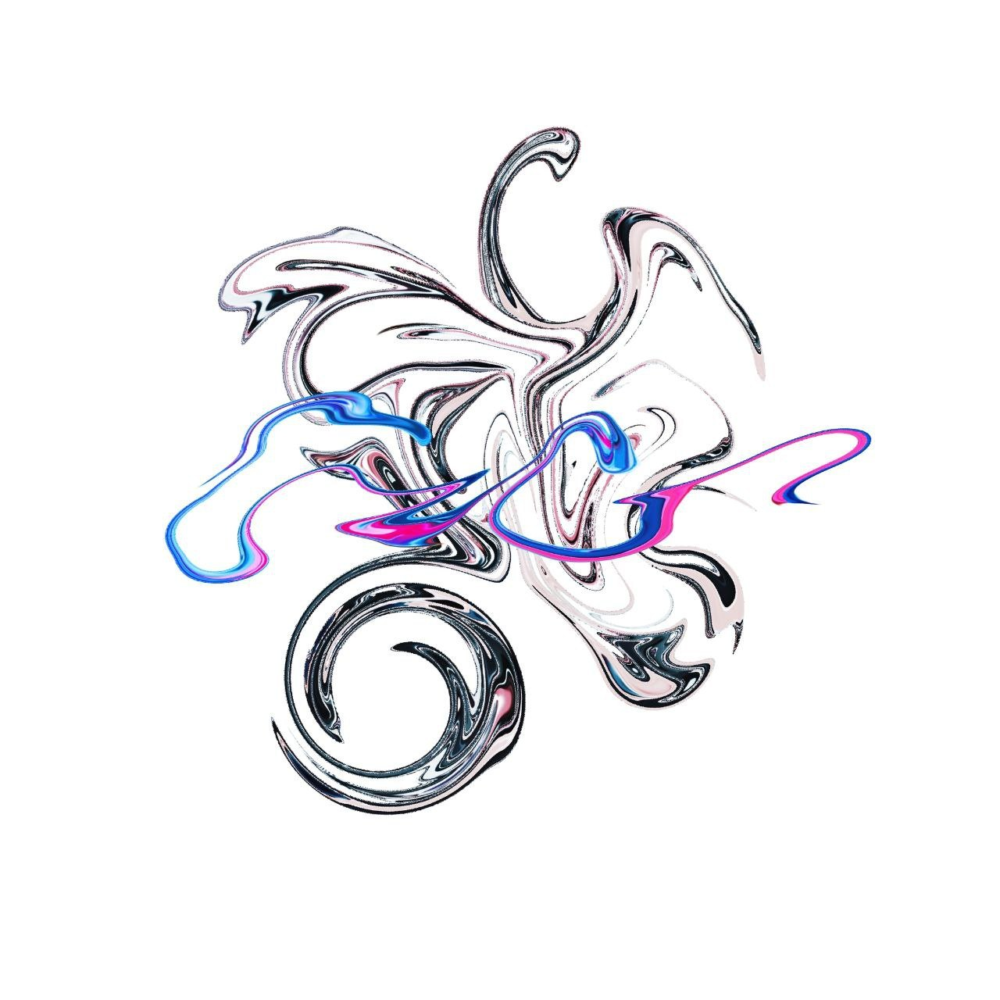
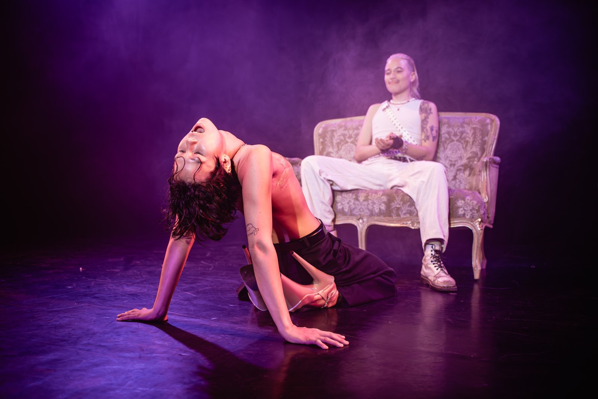
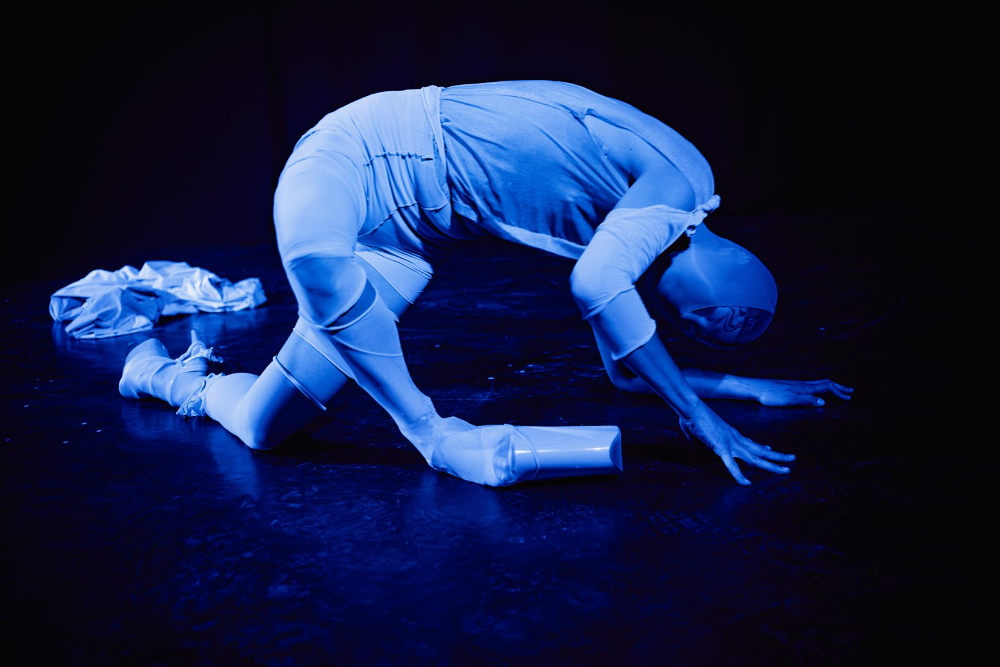
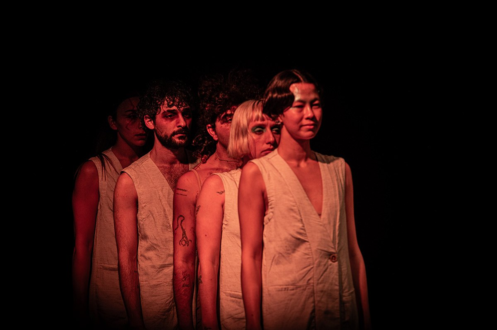
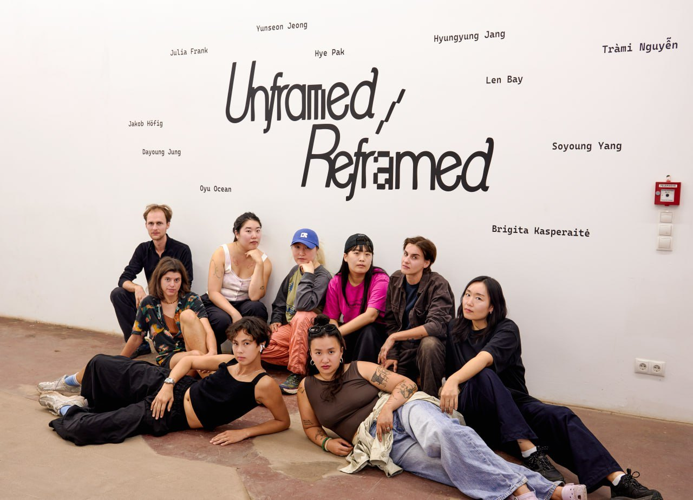

Production / performance
ANDY — Queer Communities Across Time ↗
A journey into queer history and the Silver Factory community, bringing lecture, drag, karaoke, anecdotes and dance into a theatre performance.
Projects & productions
Performance, artistic research, film and collaboration. Explore a project for its context, role and documentation.
Production / performance
A journey into queer history and the Silver Factory community, bringing lecture, drag, karaoke, anecdotes and dance into a theatre performance.

Performance / collective practice
The body as architecture. A collaborative performance exploring how bodies in relation transform our experience of space and time.

Artistic research / digital image
Computer-generated and code-manipulated images of phosphenes and inner, usually unseen experiences.

Artistic research / cartography
Cartographic material becomes abstract form: a way of travelling through places, news, memory and feeling.

Performance / collaboration
A sound tool turns the performers’ movements into a shared exploration of bodily, social and spatial orientation.

Bookable performance / interview
An interactive, spontaneous and participatory lap-dance / striptease performance. A work that changes with its venue, audience and moment.

Performance / movement
A performance in a prologue and three stages, structured through four distinct lighting modes.

Performance / documentation
Performance documentation from the supplied Non-Ego archive.

Film / queer joy
A celebration of queer joy, connection and playfulness, set against the backdrop of a shimmering blue pool.

Collaboration / exhibition
Images and moving-image material from Mii&Ocean’s Unframed / Reframed archive.
Showing all 10 projects